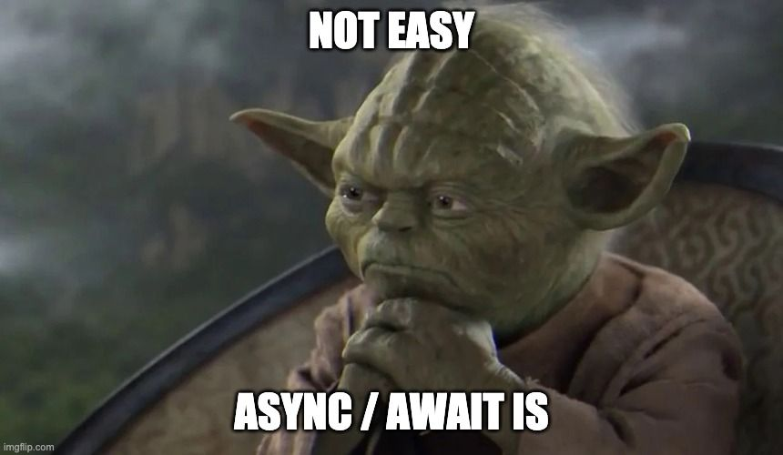
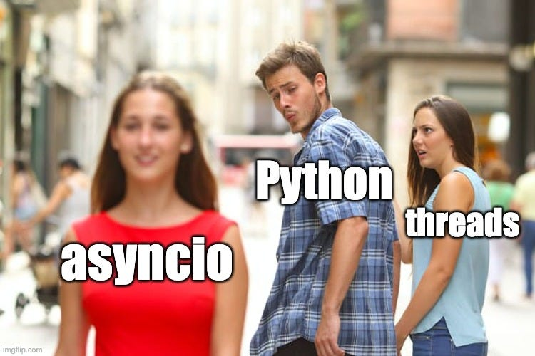
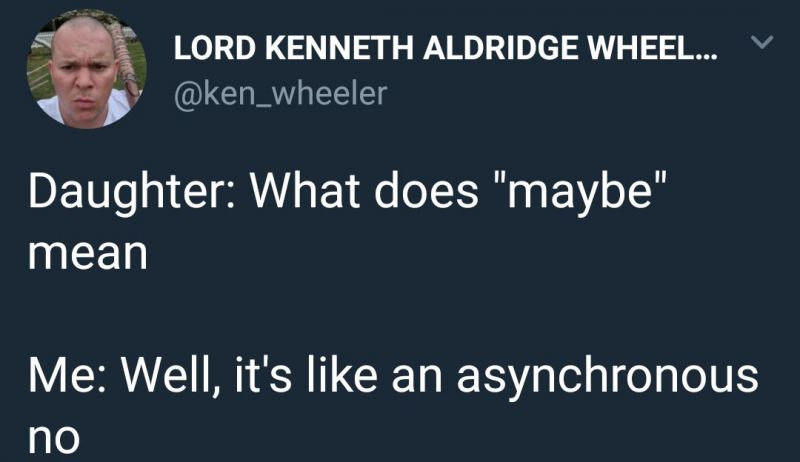

Przetwarzanie równoległe i strumieniowe
Wykład 8
Korutyny i async w Python


Plan wykładu
yield, send(), yield from, krótka historia async/await
korutyna, awaitable, event loop, wielozadaniowość kooperacyjna
create_task, gather, TaskGroup, timeout, anulowanie
blokowanie pętli, wyścigi, Lock / Semaphore / Queue, async for, biblioteki, Future vs Promise
Dlaczego to na tym przedmiocie?
Wątki (wykład 3) i pule wątków (wykład 7) dobrze działają dla kilkudziesięciu zadań. Serwer obsługujący tysiące połączeń albo klient czytający setki strumieni czujników potrzebuje lżejszego mechanizmu.
Na pętli zdarzeń działają biblioteki strumieniowe z dalszej części semestru: Streamz (pętla Tornado / asyncio) i asynchroniczni klienci Kafki.
Przypomnienie: generatory (wykład 2)
def find_letter_occurrences(words, letter):
for word in words:
yield word.count(letter)
output = find_letter_occurrences(["apple", "banana", "cherry"], "a")
print(output)
print(next(output))
print(next(output))
print(next(output))
print(next(output))
<generator object find_letter_occurrences at 0x7f80397857e0> 1 3 0 Traceback (most recent call last): ... StopIteration
- Funkcja z
yieldpo wywołaniu zwraca obiekt generatora, a jej ciało jeszcze się nie wykonuje. next()uruchamia ciało do najbliższegoyield. Generator zostaje wstrzymany razem ze zmiennymi lokalnymi.- Koniec ciała (albo
return) zgłaszaStopIteration; pętlaforobsługuje go za nas.
Funkcję, którą można wstrzymać i wznowić w środku, nazywamy korutyną (coroutine, współprogram). Generator to już prawie korutyna: brakuje mu tylko możliwości przyjmowania danych przy wznowieniu.
Generator, który przyjmuje dane: send()
def srednia():
suma, n, avg = 0, 0, None
while True:
x = yield avg # yield zwraca avg i ODBIERA x
suma, n = suma + x, n + 1
avg = suma / n
s = srednia()
next(s) # "rozruch": dojdź do pierwszego yield
print(s.send(10))
print(s.send(20))
print(s.send(60))
s.close() # GeneratorExit wewnątrz generatora
10.0 15.0 30.0
x = yield avg:yieldjest wyrażeniem (PEP 342). Oddajeavgi przy wznowieniu zwraca wartość zsend().send(v)= wznów i podstawv;next(g)tog.send(None).close()ithrow()wstrzykują wyjątek w miejscu wstrzymania.
Co się stanie, gdy pominiemy next(s) i od razu wywołamy s.send(10)?
Świeży generator nie stoi jeszcze na żadnym yield, więc nie ma gdzie podstawić wartości: TypeError: can't send non-None value to a just-started generator. Stąd „rozruch” przez next().
Funkcja a korutyna (subroutine vs coroutine)
Korutyny (Conway, 1963) uogólniają podprogramy: oprócz wejścia na początku i wyjścia przez return mają dowolnie wiele punktów wstrzymania i wznowienia.
- To, kiedy oddać sterowanie, wybiera sama korutyna (
await,yield). To wielozadaniowość bez wywłaszczania (kooperacyjna). - Wątki z wykładów 1 i 3 przełącza system operacyjny w dowolnym momencie.
Od yield from do async/await
send(), yield jako wyrażenieyield fromasyncio i @asyncio.coroutineasync def, awaitgeneratory asynchroniczne
asyncio.run(), create_task()TaskGroup, timeout(); usunięto @asyncio.coroutineStyl Pythona 3.4 (korutyny oparte na generatorach):
import asyncio
@asyncio.coroutine # styl Pythona 3.4
def stary():
yield from asyncio.sleep(1)
AttributeError: module 'asyncio' has no attribute 'coroutine'. Did you mean: 'coroutines'?
Styl współczesny:
import asyncio
async def nowy():
await asyncio.sleep(1)
Korutyny oparte na generatorach były przestarzałe od 3.8 i zostały usunięte w Pythonie 3.11. W starszych tutorialach wciąż je spotkamy, razem z loop.run_until_complete().
Przetwarzanie asynchroniczne

Synchronicznie i asynchronicznie
Synchronicznie zadania wykonują się po kolei: czekając na piekarnik, kucharz stoi i patrzy.
Asynchronicznie zadanie, które czeka, oddaje sterowanie, a „dzwonek piekarnika” (zdarzenie) mówi, kiedy do niego wrócić.
Uwaga: kucharz jest jeden i nigdy nie robi dwóch rzeczy naraz (zielone bloki się nie nakładają). Zysk biorą się wyłącznie z nakładania się czekania, więc asyncio przyspiesza programy, które głównie czekają (sieć, dysk, baza danych: I/O-bound), a nie liczą (CPU-bound).
Wielozadaniowość kooperacyjna
- asyncio działa w jednym wątku. Przełączenia są widoczne w kodzie: każde
awaitto miejsce, w którym może ruszyć inne zadanie. - Między dwoma
awaitnikt nam nie przerwie, więc wiele wyścigów z wykładu 4 po prostu znika.
- Korutyna, która długo nie dochodzi do
await(pętla obliczeń,time.sleep), zatrzymuje wszystkie pozostałe. - Korutyna kosztuje ok. 1–2 KB pamięci, wątek ma osobny stos (domyślnie do 8 MB wirtualnej pamięci w Linuksie). Sto tysięcy korutyn to nic niezwykłego.
Korutyny - asyncio

Korutyna: async def
Korutynę definiujemy przez async def. Tak jak wywołanie generatora zwraca obiekt generatora, wywołanie korutyny zwraca obiekt korutyny, a jej ciało jeszcze się nie wykonuje.
async def coroutine_add(a: int, b: int) -> int:
return a + b
def add(a: int, b: int) -> int:
return a + b
function_result = add(1, 1)
coroutine_result = coroutine_add(1, 1)
print(f"Function result is {function_result}, type {type(function_result)}")
print(f"Coroutine result is {coroutine_result}, type {type(coroutine_result)}")
Function result is 2, type <class 'int'> Coroutine result is <coroutine object coroutine_add at 0x7f3fe68a1b40>, type <class 'coroutine'> <sys>:0: RuntimeWarning: coroutine 'coroutine_add' was never awaited
Funkcja zdefiniowana przez async def jest korutyną zawsze, nawet jeśli w środku nie ma żadnego await.
Ostrzeżenie was never awaited prawie zawsze oznacza błąd: zapomniany await. Korutyna, której nikt nie uruchomił, po cichu nic nie zrobiła.
await i obiekty awaitable
import asyncio
async def nested():
return 42
async def main():
nested() # tylko tworzy obiekt korutyny, NIC się nie wykona
print(await nested()) # await uruchamia korutynę i czeka na wynik
asyncio.run(main())
nested.py:7: RuntimeWarning: coroutine 'nested' was never awaited nested() # tylko tworzy obiekt korutyny, NIC się nie wykona RuntimeWarning: Enable tracemalloc to get the object allocation traceback 42
await wolno pisać tylko wewnątrz async def. Instrukcja await main() na najwyższym poziomie skryptu to SyntaxError: 'await' outside function. Działa tylko w Jupyterze i w REPL python -m asyncio, które mają już uruchomioną pętlę zdarzeń.
await x wstrzymuje bieżącą korutynę do chwili, gdy x będzie gotowe, i zwraca jego wynik.
Obiekt jest awaitable, jeśli można go użyć w await. Trzy główne rodzaje:
- korutyny (
async def), - zadania (
asyncio.Task): korutyny zaplanowane w pętli zdarzeń, - future (
asyncio.Future): „miejsce” na wynik, który pojawi się później.
Sprawdź się
Które z poniższych można użyć w await ...? (zaznacz wszystkie)
asyncio.sleep(1) to obiekt korutyny, create_task zwraca Task, a create_future zwraca asyncio.Future. Sama funkcja asyncio.sleep (bez wywołania) i zwykły generator nie są awaitable. Future z concurrent.futures (wykład 7) też nie: trzeba go opakować przez asyncio.wrap_future().
import asyncio
async def f(x):
print("start", x)
await asyncio.sleep(0)
print("koniec", x)
async def main():
await asyncio.gather(f(1), f(2))
asyncio.run(main())
Co wypisze ten program?
await asyncio.sleep(0) nie czeka, ale oddaje sterowanie pętli zdarzeń, więc rusza drugie zadanie. Kolejność jest deterministyczna: pętla obsługuje gotowe zadania w kolejności FIFO.
Pętla zdarzeń (event loop)
Pętla zdarzeń to rdzeń asyncio: w jednym wątku uruchamia zadania, obsługuje sieć i podprocesy.
- Zadanie działa, aż dojdzie do
awaitna czymś, co nie jest gotowe. Wtedy wraca do pętli. - Gdy nic nie jest gotowe, pętla śpi w
epolldo najbliższego zdarzenia lub budzika. asyncio.run(main())tworzy pętlę, uruchamiamain()i zamyka pętlę.
W korutynie pętlę pobieramy przez asyncio.get_running_loop(). Stary wzorzec asyncio.get_event_loop() + run_until_complete() bez działającej pętli daje DeprecationWarning (3.12–3.13), a od 3.14 RuntimeError.
Pętla zdarzeń krok po kroku
asyncio.run i await po kolei
import asyncio
import time
async def fetch_data(data_id: int) -> str:
print(f"Fetching data for ID {data_id}")
await asyncio.sleep(2) # symulacja zapytania sieciowego
print(f"Data fetched for ID {data_id}")
return f"Data {data_id}"
async def compute_result(value: int) -> int:
await asyncio.sleep(1) # symulacja innej operacji I/O
return value * 2
async def process_data() -> None:
data = await fetch_data(1)
result = await compute_result(5)
print(f"Result: {result}, processed: {data}")
start = time.perf_counter()
asyncio.run(process_data())
print(f"Total time {time.perf_counter() - start:.2f} s")
Fetching data for ID 1 Data fetched for ID 1 Result: 10, processed: Data 1 Total time 3.01 s
asyncio.run(process_data())uruchamia pętlę zdarzeń i główną korutynę.- Na
awaitkorutyna się zatrzymuje, a pętla może wykonywać inne zadania. Po zakończeniu oczekiwanej operacji wraca dokładnie w to samo miejsce.
Czas to 3 s = 2 + 1. Dwa await jeden po drugim wykonują się sekwencyjnie, choć compute_result(5) wcale nie potrzebuje wyniku fetch_data. Samo async nic nie przyspiesza: potrzebujemy zadań.
Zadania (create_task)
import asyncio
import time
async def fetch_data(data_id: int) -> str:
print(f"Fetching data for ID {data_id}")
await asyncio.sleep(3) # czekanie na odpowiedź serwera
print(f"Finished fetching data for ID {data_id}")
return f"Data {data_id}"
async def main() -> None:
# create_task: korutyna trafia do pętli zdarzeń i rusza
# przy najbliższym await
task1 = asyncio.create_task(fetch_data(1))
task2 = asyncio.create_task(fetch_data(2))
task3 = asyncio.create_task(fetch_data(3))
print(await task1, await task2, await task3)
start = time.perf_counter()
asyncio.run(main())
print(f"Total time {time.perf_counter() - start:.4f} s")
Fetching data for ID 1 Fetching data for ID 2 Fetching data for ID 3 Finished fetching data for ID 1 Finished fetching data for ID 2 Finished fetching data for ID 3 Data 1 Data 2 Data 3 Total time 3.0045 s
asyncio.create_task()przekazuje korutynę pętli zdarzeń do uruchomienia „w tle” i zwraca uchwytTask, którym można poczekać na wynik albo anulować zadanie.- 3 zadania po 3 s trwają razem 3 s, a nie 9 s. Działają współbieżnie (concurrently), a nie równolegle: przez cały czas pracuje jeden wątek.
Pętla trzyma tylko słabe referencje do zadań. Zadanie utworzone przez samo asyncio.create_task(f()), bez przypisania, może zostać usunięte przez garbage collector w trakcie działania. Zachowujmy referencje (albo używajmy TaskGroup).
Sekwencyjnie czy współbieżnie? Symulacja
Sprawdź się: ile to potrwa?
async def a():
await asyncio.sleep(1)
await asyncio.sleep(2)
3 s: dwa await po kolei to 1 + 2.
async def b():
t = asyncio.create_task(
asyncio.sleep(2))
await asyncio.sleep(1)
await t
2 s: zadanie t śpi już od początku, a await t po 1 s czeka tylko na pozostałą sekundę.
async def c():
await asyncio.gather(
asyncio.sleep(1),
asyncio.sleep(2))
2 s: gather uruchamia obie korutyny jako zadania współbieżnie, więc czas to maksimum, a nie suma.
Zmierzone w Pythonie 3.13: a 3.0 s, b 2.0 s, c 2.0 s.
asyncio.gather
import asyncio
import time
async def pobierz(nazwa: str, czas: float) -> str:
await asyncio.sleep(czas)
if nazwa == "c":
raise ConnectionError(f"{nazwa}: brak połączenia")
return f"{nazwa}: OK po {czas} s"
async def main():
t0 = time.perf_counter()
wyniki = await asyncio.gather(pobierz("a", 2), pobierz("b", 1))
print(wyniki, f"{time.perf_counter() - t0:.2f} s")
wyniki = await asyncio.gather(pobierz("a", 1), pobierz("c", 0.5),
return_exceptions=True)
print(wyniki)
asyncio.run(main())
['a: OK po 2 s', 'b: OK po 1 s'] 2.00 s
['a: OK po 1 s', ConnectionError('c: brak połączenia')]
gather(*aws)opakowuje korutyny w zadania, uruchamia je współbieżnie i zwraca listę wyników w kolejności argumentów, a nie zakończenia.- Domyślnie pierwszy wyjątek trafia do
await gather(...), ale pozostałe zadania działają dalej. return_exceptions=True: wyjątki wracają jako elementy listy.- Wyniki w kolejności zakończenia daje
asyncio.as_completed()(od 3.13 także jakoasync for).
TaskGroup (Python 3.11+)
import asyncio
async def pobierz(nazwa: str, czas: float) -> str:
try:
await asyncio.sleep(czas)
if nazwa == "c":
raise ConnectionError(f"{nazwa}: brak połączenia")
return f"{nazwa}: OK"
except asyncio.CancelledError:
print(f"{nazwa}: anulowane")
raise
async def main():
async with asyncio.TaskGroup() as tg: # Python 3.11+
ta = tg.create_task(pobierz("a", 1))
tb = tg.create_task(pobierz("b", 2))
print(ta.result(), tb.result()) # tu wszystkie są gotowe
try:
async with asyncio.TaskGroup() as tg:
tg.create_task(pobierz("a", 1))
tg.create_task(pobierz("c", 0.5)) # błąd po 0,5 s
except* ConnectionError as eg:
print("błędy:", eg.exceptions)
asyncio.run(main())
a: OK b: OK
a: anulowane
błędy: (ConnectionError('c: brak połączenia'),)
- Wyjście z bloku
async withczeka na wszystkie zadania grupy. Żadne nie „ucieknie” poza blok. - Gdy jedno zadanie zgłosi wyjątek, grupa anuluje pozostałe i zgłasza
ExceptionGroup, które łapiemy przezexcept*. - To współbieżność strukturalna (structured concurrency), wzorowana na „nurseries” z biblioteki Trio. W nowym kodzie zalecana zamiast luźnych
create_taskigather.
Limity czasu i anulowanie
import asyncio
async def wolna_usluga():
try:
await asyncio.sleep(10)
return "odpowiedź"
finally:
print("sprzątanie (finally)") # wykona się także przy anulowaniu
async def main():
try:
async with asyncio.timeout(1): # Python 3.11+
print(await wolna_usluga())
except TimeoutError:
print("przekroczono limit 1 s")
task = asyncio.create_task(wolna_usluga())
await asyncio.sleep(0.5)
task.cancel() # wstrzykuje CancelledError w await
try:
await task
except asyncio.CancelledError:
print("anulowane:", task.cancelled())
asyncio.run(main())
sprzątanie (finally) przekroczono limit 1 s sprzątanie (finally) anulowane: True
async with asyncio.timeout(s)(3.11+) anuluje kod w bloku possekundach i zgłaszaTimeoutError. Starszy odpowiednik:asyncio.wait_for(aw, s).task.cancel()wstrzykujeCancelledErrorw miejscu, w którym zadanie czeka (podobnie jakthrow()w generatorze), więcfinallyiasync withsprzątają zasoby.- Nie „połykajmy”
CancelledError: po sprzątaniu trzeba go zgłosić dalej (raise).
Nie blokuj pętli zdarzeń
import asyncio
import time
T0 = time.perf_counter()
async def serce(): # "bicie serca" co 0,25 s
for _ in range(8):
print(f"{time.perf_counter() - T0:4.2f} s ♥")
await asyncio.sleep(0.25)
async def blokujaca():
await asyncio.sleep(0.5)
print(f"{time.perf_counter() - T0:4.2f} s time.sleep(1) start")
time.sleep(1) # BŁĄD: blokuje cały wątek pętli
print(f"{time.perf_counter() - T0:4.2f} s time.sleep(1) koniec")
async def main():
await asyncio.gather(serce(), blokujaca())
asyncio.run(main())
time.sleep(1)
0.00 s ♥ 0.25 s ♥ 0.50 s start 1.50 s koniec 1.50 s ♥ 1.75 s ♥ 2.00 s ♥ ...
await asyncio.to_thread(time.sleep, 1)
0.00 s ♥ 0.25 s ♥ 0.50 s start 0.50 s ♥ 0.75 s ♥ 1.00 s ♥ 1.25 s ♥ 1.50 s koniec
Wynik skrócony: „time.sleep(1) start” zapisane jako „start”.
Przez całą sekundę time.sleep serce nie bije: pętla zdarzeń stoi, bo jedyny wątek śpi. Tak samo działa requests.get(), czytanie dużego pliku czy długa pętla obliczeń.
Tryb debug (asyncio.run(main(), debug=True) albo python -X dev) ostrzega o takich miejscach:Executing <Task ... blokujaca() ... serce.py:11> took 1.000 seconds
Zablokowana pętla: symulacja
oś czasu: ostatnie 6 sekund, „teraz” po prawej
Kliknij Start, a potem wywołaj w zadaniu 2 każdą z trzech operacji.
Kod blokujący: to_thread i executory
import asyncio
import time
from concurrent.futures import ProcessPoolExecutor
def ciezka_funkcja(n: int) -> int: # CPU-bound, czysta funkcja
return sum(i * i for i in range(n))
def stare_api(url: str) -> str: # blokujące I/O (np. requests)
time.sleep(1)
return f"{url}: 200"
async def main():
loop = asyncio.get_running_loop()
t0 = time.perf_counter()
with ProcessPoolExecutor() as pool:
wyniki = await asyncio.gather(
asyncio.to_thread(stare_api, "a.pl"), # wątek (3.9+)
asyncio.to_thread(stare_api, "b.pl"),
loop.run_in_executor(pool, ciezka_funkcja, 10**7),
loop.run_in_executor(pool, ciezka_funkcja, 10**7),
)
print(wyniki[:2], wyniki[2])
print(f"{time.perf_counter() - t0:.2f} s")
if __name__ == "__main__":
asyncio.run(main())
['a.pl: 200', 'b.pl: 200'] 333333283333335000000 1.86 s
| Blokuje pętlę | Zamiast tego |
|---|---|
time.sleep(s) | await asyncio.sleep(s) |
requests.get(url) | aiohttp, httpx.AsyncClient |
| stare, blokujące API | await asyncio.to_thread(f, ...) |
| obliczenia (CPU-bound) | run_in_executor(pool, f, ...) z ProcessPoolExecutor |
Executory i pule procesów: wykład 7. Sekwencyjnie ten program trwałby ok. 5,6 s (1 + 1 + 2 × 1,8 s). Czasy zależą od maszyny.
Wyścigi w asyncio (race condition)
import asyncio
saldo = 0
async def wplata(kwota: int):
global saldo
stare = saldo # odczyt
await asyncio.sleep(0) # przełączenie (np. zapytanie do bazy)
saldo = stare + kwota # zapis na podstawie starego odczytu
async def main():
await asyncio.gather(*(wplata(10) for _ in range(100)))
print(saldo)
asyncio.run(main())
Co wypisze program? (100 wpłat po 10)
Wszystkie 100 zadań odczytuje saldo = 0, zanim którekolwiek zapisze wynik, bo na await pętla przełącza się do kolejnego zadania. Ostatni zapis to 0 + 10. Wynik jest powtarzalny, bo w asyncio przełączenia są deterministyczne.
saldo = 0
lock = asyncio.Lock()
async def wplata(kwota: int):
global saldo
async with lock: # sekcja krytyczna obejmuje await
stare = saldo
await asyncio.sleep(0)
saldo = stare + kwota
1000
Wyścig (wykład 4) w asyncio może się pojawić tylko w miejscu await. Sekcja krytyczna, która obejmuje await, wymaga asyncio.Lock. Kod bez await między odczytem a zapisem jest bezpieczny.
Prymitywy z asyncio nie są bezpieczne dla wątków, a threading.Lock w korutynie zablokuje pętlę.
Semafor: limit współbieżności
import asyncio
import random
import time
T0 = time.perf_counter()
limit = asyncio.Semaphore(3) # najwyżej 3 pobrania naraz
aktywne = 0
async def pobierz(i: int) -> int:
global aktywne
async with limit:
aktywne += 1
print(f"{time.perf_counter() - T0:4.1f} s start {i} (aktywne: {aktywne})")
await asyncio.sleep(random.uniform(0.5, 1.5))
aktywne -= 1
return i
async def main():
wyniki = await asyncio.gather(*(pobierz(i) for i in range(8)))
print(wyniki)
asyncio.run(main())
0.0 s start 0 (aktywne: 1) 0.0 s start 1 (aktywne: 2) 0.0 s start 2 (aktywne: 3) 0.7 s start 3 (aktywne: 3) 0.9 s start 4 (aktywne: 3) 1.2 s start 5 (aktywne: 3) 1.8 s start 6 (aktywne: 3) 1.9 s start 7 (aktywne: 3) [0, 1, 2, 3, 4, 5, 6, 7]
- Semafor z wykładu 3, wersja dla korutyn:
async withczeka (bez blokowania pętli), aż zwolni się miejsce. - Typowe użycie: najwyżej N jednoczesnych zapytań do serwera lub połączeń z bazą, żeby nie przeciążyć usługi.
Czasy losowe (random.uniform), więc przy każdym uruchomieniu inne.
Kolejka: producent i konsumenci
import asyncio
async def producent(q: asyncio.Queue):
for i in range(6):
await q.put(i) # czeka, gdy kolejka pełna
print(f"wyprodukowano {i}")
q.shutdown() # Python 3.13+: koniec danych
async def konsument(nazwa: str, q: asyncio.Queue):
while True:
try:
x = await q.get() # czeka, gdy kolejka pusta
except asyncio.QueueShutDown:
return
await asyncio.sleep(0.1) # "przetwarzanie"
print(f" {nazwa} przetworzył {x}")
async def main():
q = asyncio.Queue(maxsize=2) # ograniczony bufor
async with asyncio.TaskGroup() as tg:
tg.create_task(producent(q))
tg.create_task(konsument("K1", q))
tg.create_task(konsument("K2", q))
asyncio.run(main())
wyprodukowano 0 wyprodukowano 1 wyprodukowano 2 wyprodukowano 3 K1 przetworzył 0 K2 przetworzył 1 wyprodukowano 4 wyprodukowano 5 K1 przetworzył 2 K2 przetworzył 3 K1 przetworzył 4 K2 przetworzył 5
- Producent i konsument (wykład 5) bez zamków:
put()czeka na miejsce,get()na dane. maxsizedaje przeciwciśnienie (backpressure).Queue.shutdown()jest nowe w 3.13; wcześniej używano wartownika (None).
Sprawdź się
Które wywołania wewnątrz korutyny zablokują pętlę zdarzeń? (zaznacz wszystkie)
Blokuje wszystko, co trwa długo i nie oddaje sterowania przez await: time.sleep, synchroniczne I/O (requests) i długie obliczenia. await na pustej kolejce wstrzymuje tylko tę jedną korutynę.
Chcesz pobrać 10 000 stron, ale serwer pozwala na najwyżej 20 jednoczesnych połączeń. Czego użyjesz?
Semaphore(20) wpuszcza najwyżej 20 korutyn naraz. Lock to semafor binarny (1 naraz), a timeout ogranicza czas, a nie liczbę połączeń.
async for i async with
import asyncio
import random
async def czujnik(n: int): # asynchroniczny generator
for i in range(n):
await asyncio.sleep(0.1) # czekamy na odczyt z sieci
yield i, round(random.uniform(25, 35), 1)
async def main():
async for nr, temp in czujnik(5): # async for
print(nr, temp, "ALARM" if temp > 30 else "")
alarmy = [t async for _, t in czujnik(20) if t > 30] # async comprehension
print(len(alarmy), "alarmów")
asyncio.run(main())
0 31.5 ALARM 1 25.4 2 30.7 ALARM 3 25.4 4 29.3 9 alarmów
async def+yield= generator asynchroniczny (3.6+): między elementami może czekać na sieć. Czytamy go przezasync for.- To potok generatorów z wykładu 2, tylko źródło danych nie blokuje programu.
async withto menedżer kontekstu z asynchronicznym wejściem i wyjściem:Lock,TaskGroup, połączenia sieciowe.- Tak czyta się strumienie w praktyce, np.
async for msg in consumer:waiokafka(wykład o Kafce).
Odczyty są losowe.
Prawdziwe I/O: serwer TCP w asyncio
import asyncio
import time
async def obsluz(reader, writer): # serwer: korutyna na klienta
linia = await reader.readline()
await asyncio.sleep(1) # "wolna" obsługa żądania
writer.write(linia.upper())
await writer.drain()
writer.close()
async def klient(i: int) -> str:
reader, writer = await asyncio.open_connection("127.0.0.1", 8888)
writer.write(f"czujnik {i}\n".encode())
odp = await reader.readline()
writer.close()
return odp.decode().strip()
async def main():
serwer = await asyncio.start_server(obsluz, "127.0.0.1", 8888)
async with serwer:
t0 = time.perf_counter()
odp = await asyncio.gather(*(klient(i) for i in range(100)))
print(odp[:3], "...", odp[-1])
print(f"{len(odp)} klientów w {time.perf_counter() - t0:.2f} s")
asyncio.run(main())
['CZUJNIK 0', 'CZUJNIK 1', 'CZUJNIK 2'] ... CZUJNIK 99 100 klientów w 1.04 s
- Serwer i 100 klientów w jednym wątku. Każde połączenie to osobna korutyna
obsluz, a każda obsługa trwa 1 s. - Razem nadal ok. 1 s, bo wszystkie korutyny czekają jednocześnie. Wersja „wątek na klienta” potrzebowałaby 100 wątków.
- Na tej zasadzie działają serwery i brokery danych z dalszej części semestru.
Inne biblioteki asynchroniczne
asyncio jest w bibliotece standardowej, ale nie jest jedyną biblioteką do programowania asynchronicznego:
| Biblioteka | Opis |
|---|---|
| Twisted | Najstarszy (2002) sterowany zdarzeniami framework sieciowy: serwery SMTP, HTTP, SSH, proxy. Obiekty Deferred pełnią rolę obietnic. Może działać na pętli asyncio. |
| Tornado | Asynchroniczny framework WWW i biblioteka sieciowa. Nie korzysta z WSGI, zwykle jeden wątek na proces. Od wersji 5 działa na pętli asyncio. Na Tornado opiera się Streamz. |
| Trio | Współczesna biblioteka z współbieżnością strukturalną (nurseries), która zainspirowała asyncio.TaskGroup. |
| Curio | Biblioteka D. Beazleya do współbieżnego programowania systemowego na korutynach: zadania, gniazda, pliki, blokady, kolejki. Dziś niszowa, ale jej pomysły przejęły Trio i asyncio. |
| AnyIO | Wspólne API działające na asyncio albo Trio. Używają go m.in. FastAPI / Starlette i httpx. |
| uvloop | Szybsza implementacja pętli zdarzeń asyncio (na libuv, jak Node.js), podmieniana jedną linią. |
Klienci: aiohttp, httpx (HTTP), asyncpg (PostgreSQL), aiokafka (Kafka).
Promise (JavaScript) a Future (Python)
Promise to obiekt związany z zadaniem asynchronicznym: funkcja uruchamia pracę w tle i od razu zwraca obietnicę, a wywołujący reaguje na jej spełnienie (then) lub odrzucenie (catch).
let myPromise = new Promise((resolve, reject) => {
// kod, który trwa, np. ładowanie danych
let success = true;
if (success) resolve("The data has loaded successfully!");
else reject("There was an error loading the data.");
});
myPromise
.then(message => console.log(message)) // spełniona
.catch(error => console.log(error)); // odrzucona
W Pythonie tę rolę pełni Future: asyncio.Future, a w świecie wątków concurrent.futures.Future (wykład 7).
import asyncio
async def main():
loop = asyncio.get_running_loop()
fut = loop.create_future() # pusta "obietnica"
fut.add_done_callback( # ~ then
lambda f: print("callback:", f.result()))
loop.call_later(1, fut.set_result, "dane gotowe") # ~ resolve
print("czekam...")
print("await:", await fut)
asyncio.run(main())
czekam... callback: dane gotowe await: dane gotowe
set_result ≈ resolve, set_exception ≈ reject, add_done_callback ≈ then. Na co dzień zamiast callbacków piszemy await, tak jak w JavaScripcie.
async w JavaScripcie i w Pythonie
JavaScript: funkcja async po wywołaniu od razu wykonuje się do pierwszego await i zwraca Promise.
async function f() {
console.log("f: start");
return 42;
}
const p = f(); // ciało rusza od razu!
console.log(p);
p.then(v => console.log("then:", v));
console.log("koniec skryptu");
f: start
Promise { 42 }
koniec skryptu
then: 42
Python: wywołanie korutyny tylko tworzy obiekt. Ciało rusza dopiero po await albo po zaplanowaniu w pętli (create_task).
import asyncio
async def f():
print("f: start")
return 42
async def main():
c = f()
print(c)
t = asyncio.create_task(f()) # zaplanowana, ruszy przy najbliższym await
print("main: przed await")
print(await c, await t)
asyncio.run(main())
<coroutine object f at 0x7f924ce0a080> main: przed await f: start f: start 42 42
Wyniki: Node.js i Python 3.13. Od 3.12 można włączyć zachowanie podobne do JavaScriptu: loop.set_task_factory(asyncio.eager_task_factory).
Wątki, procesy czy asyncio?
wątki (threading) | procesy (multiprocessing) | korutyny (asyncio) | |
|---|---|---|---|
| przełączanie | system operacyjny, w dowolnym momencie | system operacyjny | sama korutyna, tylko w await |
| prawdziwa równoległość | nie przy GIL (tak w 3.13t free-threaded) | tak, wiele rdzeni | nie, jeden wątek |
| koszt jednostki | stos wątku, setki do tysięcy wątków | osobny proces i pamięć | ok. 1–2 KB, setki tysięcy |
| wyścigi | w każdej instrukcji, potrzebne zamki | brak współdzielonej pamięci | tylko w miejscach await |
| dobre do | I/O z blokującymi bibliotekami | obliczeń (CPU-bound) | bardzo wielu równoczesnych operacji I/O |
| wymagania | zwykły kod | dane muszą się serializować (pickle) | biblioteki asynchroniczne „od góry do dołu” |
Rozwiązania się łączą: pętla asyncio obsługuje sieć, asyncio.to_thread przenosi blokujące wywołania do wątków, a run_in_executor z ProcessPoolExecutor przenosi obliczenia do procesów.
Ćwiczenia
Uzupełnij program tak, żeby 5 pobrań trwało razem ok. 1 s, a nie 5 s:
import asyncio def pobierz(i): asyncio.sleep(1) return i * 10 async def main(): w = await asyncio.( *(pobierz(i) for i in range(5))) print(w) # [0, 10, 20, 30, 40] asyncio.(main())
Wywołaj blokującą funkcję stare_api(url) bez blokowania pętli:
wynik = await asyncio.
Zamiast gather można użyć TaskGroup i tg.create_task(pobierz(i)). Do to_thread przekazujemy funkcję stare_api bez nawiasów, a jej argumenty osobno.
Podsumowanie

Podsumowanie wykładu
- Korutyna to funkcja, którą można wstrzymać i wznowić. W Pythonie wyrosła z generatorów (
send,yield from), a od 3.5 ma składnięasync def/await. - Wywołanie korutyny tylko tworzy obiekt. Uruchamia ją
await,asyncio.run()albo zadanie (create_task,TaskGroup). - Pętla zdarzeń w jednym wątku przełącza zadania w miejscach
await: współbieżność bez równoległości, idealna dla I/O. - Kolejne
awaitsą sekwencyjne. Współbieżność dajągatheriTaskGroup, a limity czasuasyncio.timeout. - Nigdy nie blokuj pętli:
time.sleep,requestsi obliczenia przenosimy doto_threadlub executorów. - Synchronizacja:
asyncio.Lock,Semaphore,Queue. Wyścigi są możliwe tylko naawait.
Laboratorium: korutyny i async w Python.
Następny wykład (16.12): dane sensoryczne, serwer i broker danych, biblioteki przetwarzania strumieniowego.